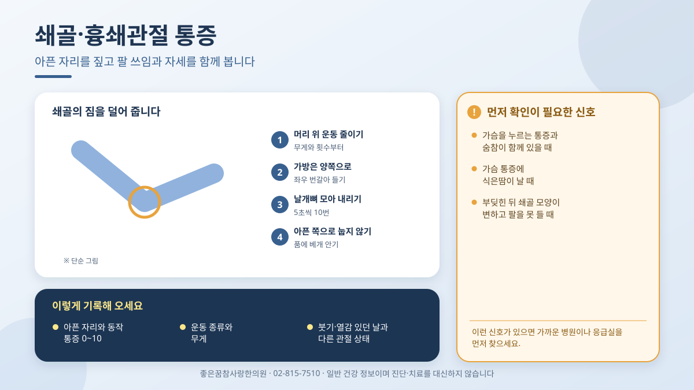

이종호 한의사 감수좋은꿈참사랑한의원 대표원장 (한의사 면허번호 19769)발행 2026-11-26 · 수정 2026-11-26
이 글의 차례
아침에 셔츠 단추를 채우다가 목 아래 가운데, 가슴뼈 바로 옆이 볼록하게 솟아 있는 것을 발견합니다. 손가락으로 눌러 보니 시큰합니다. 생각해 보면 요즘 팔을 머리 위로 올리거나 무거운 장바구니를 들 때마다 그 자리가 뻐근했던 것 같습니다.
진료실에서 쇄골 쪽 통증을 말씀하시는 분들은 대개 어디가 아프다고 설명해야 할지 난감해하십니다. 어깨라고 하기엔 너무 앞쪽이고, 가슴이라고 하기엔 뼈가 만져지는 자리라서요. 그래서 손가락으로 자리를 가리키며 "여기요"라고 하시는 경우가 많습니다.
저는 쇄골을 팔과 몸통 사이에 놓인 뼈 다리라고 설명드립니다. 팔이 몸통에 뼈로 이어지는 길목이 바로 이 쇄골입니다. 팔을 들고 돌리는 모든 움직임에 쇄골이 함께 움직이기 때문에, 이 자리가 지치면 생각보다 많은 동작이 불편해집니다.
쇄골 주변 통증은 생각보다 흔하지만, 자리가 애매해서 그냥 참고 지내시는 경우가 많습니다. 어깨 진료를 받으면서도 정작 쇄골 이야기는 빠뜨리시기도 합니다. 아픈 자리를 정확히 짚어 말씀해 주시는 것만으로도 진찰의 방향이 훨씬 또렷해집니다.
이 글에서는 쇄골과 흉쇄관절이 어디에 있고 무슨 일을 하는지, 왜 아프고 붓는지, 어깨나 가슴 통증과 어떻게 다른지, 그리고 생활에서 해 볼 수 있는 것과 한의원에서 함께 살필 수 있는 것을 차례로 정리했습니다.
쇄골과 흉쇄관절은 어디에 있나요
쇄골은 목 아래에서 양쪽 어깨 끝까지 가로로 뻗은 길쭉한 뼈입니다. 안쪽 끝은 가슴 한가운데의 가슴뼈와 만나 흉쇄관절을 이루고, 바깥쪽 끝은 어깨뼈 끝과 만나 견봉쇄골관절을 이룹니다. 두 관절 모두 손으로 쉽게 만져지는 자리에 있습니다.
흉쇄관절은 작지만 팔을 들 때마다 쇄골이 살짝 들리고 돌아가도록 받쳐 주는 중심축입니다. 관절 사이에는 작은 연골 원반이 있고, 단단한 인대가 사방에서 붙잡고 있습니다. 그래서 크게 다치는 일은 드물지만, 반복된 부담이나 염증으로 붓고 시큰해질 수 있습니다.
쇄골 바깥쪽 끝의 관절은 어깨를 많이 쓰는 분들에게 더 자주 불편이 생깁니다. 무거운 것을 머리 위로 드는 운동이나 팔을 몸 앞으로 가로질러 뻗는 동작에서 어깨 위쪽 끝이 콕 찌르는 모습으로 나타나는 경우가 많습니다.
왜 쇄골 주변이 아프고 부을까요
쇄골 주변 통증은 한 가지 원인보다 몇 가지가 겹쳐서 생기는 경우가 많습니다. 어떤 일을 하고 어떤 자세로 지내는지에 따라 원인의 무게가 달라집니다.
- 팔을 머리 위로 올리는 일이나 운동을 반복하는 경우
- 무거운 가방을 한쪽 어깨에 오래 메고 다니는 경우
- 어깨가 앞으로 말리고 고개가 나온 자세로 오래 지내는 경우
- 넘어지면서 어깨나 팔을 짚어 충격이 쇄골로 전해진 경우
- 나이가 들며 관절 연골이 얇아지는 퇴행성 변화가 생긴 경우
- 다른 관절에도 염증이 생기는 류마티스 계열 질환이 함께 있는 경우
흉쇄관절의 퇴행성 변화는 손을 많이 쓰는 쪽에 더 흔하고, 관절이 조금 굵어져 볼록해 보이기도 합니다. 통증 없이 모양만 달라진 경우도 많아서, 언제부터 볼록했는지와 아픔이 함께 있는지를 나눠서 봅니다.
어깨 통증, 가슴 통증과는 어떻게 다른가요
어깨 관절 자체의 문제는 팔을 옆으로 들 때 어깨 바깥쪽이나 위팔 쪽이 아프고, 밤에 아픈 쪽으로 누우면 불편한 경우가 많습니다. 쇄골 쪽 통증은 아픈 자리가 앞쪽 뼈 위에 또렷하게 짚이고, 그 자리를 누르면 아픔이 커지는 것이 특징입니다.
가슴 한가운데 통증은 갈비뼈와 가슴뼈를 잇는 연골에 염증이 생기는 늑연골염과 헷갈리기도 합니다. 늑연골염은 가슴뼈 양옆 아래쪽 여러 자리가 아픈 경우가 많고, 흉쇄관절 통증은 가슴뼈 맨 위 쇄골과 만나는 한 자리에 머무르는 편입니다.
가슴 쪽 통증은 뼈와 관절 말고도 심장이나 폐 같은 속 장기에서 비롯되는 경우가 있어서, 진료실에서는 이 가능성을 먼저 가려 봅니다. 누르면 아프고 팔 움직임에 따라 달라지는 통증인지, 움직임과 상관없이 생기는 통증인지가 중요한 구분점입니다.
운동과 일에 따라 다른 모습
헬스장에서 벤치프레스나 머리 위로 미는 운동을 많이 하는 분은 쇄골 바깥쪽 끝이 아픈 경우가 많습니다. 무게를 갑자기 늘린 시기와 통증이 시작된 시기가 겹치는지 떠올려 보시면 도움이 됩니다.
수영, 배드민턴, 테니스처럼 팔을 크게 돌리는 운동을 하는 분도 쇄골 주변이 지치기 쉽습니다. 천장 도배나 선반 정리처럼 팔을 머리 위로 오래 들고 하는 일을 한 뒤 쇄골 안쪽이 시큰해졌다는 분도 많습니다.
아기를 오래 안고 달래는 부모님이나, 무거운 짐을 한쪽 어깨로 메는 일이 많은 분은 한쪽 쇄골만 아픈 경우가 많습니다. 어느 쪽을 더 쓰는지와 아픈 쪽이 같은지 확인해 보세요.
예전에 쇄골을 다친 적이 있다면
쇄골은 넘어지면서 손이나 어깨를 짚을 때 부러지기 쉬운 뼈이기도 합니다. 예전에 쇄골 골절로 치료를 받으셨다면, 뼈가 붙은 뒤에도 그 자리가 조금 볼록하게 남거나 양쪽 길이가 미세하게 달라지는 경우가 있습니다.
뼈는 잘 붙었는데도 날씨가 추워지거나 팔을 많이 쓴 날 그 자리가 묵직하다고 하시는 분이 많습니다. 다친 뒤 오래 팔을 아껴 쓰면서 어깨와 등 근육이 약해지고, 자세가 한쪽으로 기울어진 채 굳은 경우도 흔합니다. 이럴 때는 쇄골보다 어깨와 날개뼈의 움직임을 함께 살펴보는 것이 도움이 됩니다.
자세가 쇄골에 주는 부담
어깨가 앞으로 말리면 쇄골 바깥쪽 끝이 앞으로 끌려가고, 안쪽 흉쇄관절은 그만큼 비틀린 채 버티게 됩니다. 하루 종일 컴퓨터 앞에서 팔을 앞으로 뻗고 지내는 분들이 쇄골 주변의 뻐근함을 자주 말씀하시는 이유입니다.
가슴 앞쪽 근육이 짧아지고 등 근육이 약해진 상태가 오래 이어지면, 팔을 들 때마다 쇄골이 제 길로 움직이지 못하고 관절에 부담이 쌓입니다. 그래서 쇄골이 아픈 분께는 아픈 자리만큼이나 가슴을 펴고 날개뼈를 바로 두는 연습을 함께 권합니다.
스스로 살펴볼 수 있는 몇 가지
거울 앞에서 아래를 확인해 보세요. 어느 자리가 어떤 동작에서 불편한지 알아 두시면 진료실에서 이야기하기가 훨씬 쉬워집니다.
- 양쪽 쇄골 안쪽 끝의 높이와 볼록한 정도가 다른가요?
- 아픈 자리를 손가락 하나로 짚을 수 있나요?
- 팔을 앞으로 올릴 때, 옆으로 올릴 때, 몸 앞으로 가로질러 뻗을 때 중 언제 아픈가요?
- 어깨를 으쓱하거나 뒤로 모을 때 딸깍 소리나 걸리는 느낌이 있나요?
그 자리가 붉고 따뜻한지도 함께 보세요. 열감이 있고 부어 있다면 관절에 염증이 있는 경우일 수 있어 진찰에서 더 자세히 확인합니다.
먼저 이렇게 여쭙니다
처음 오시면 저는 대략 이런 순서로 여쭙니다. 미리 떠올려 오시면 이야기가 훨씬 수월해집니다.
- 언제부터 아팠고, 넘어지거나 부딪힌 일이 있었나요?
- 쇄골 안쪽, 가운데, 바깥쪽 중 어디가 아프신가요?
- 볼록하게 솟은 모양은 언제부터 보였나요?
- 어떤 운동이나 일을 하시나요? 팔을 머리 위로 드는 일이 많나요?
- 손가락이나 손목, 무릎처럼 다른 관절도 붓거나 아픈 곳이 있나요?
- 열이 나거나 몸이 무겁고 피로한 느낌이 함께 있나요?
다른 관절에도 붓기가 있거나 아침마다 손이 뻣뻣하다면 류마티스 계열의 관절 질환을 함께 살펴볼 필요가 있어 내과나 류마티스내과 검사를 권해 드리기도 합니다.
일상에서 먼저 해 볼 수 있는 것
쇄골 주변이 아플 때는 아픈 동작을 잠시 줄이면서, 어깨가 앞으로 말린 자세를 펴 주는 것이 기본입니다. 쇄골은 어깨와 함께 움직이기 때문에 어깨와 등의 자세가 쇄골의 부담을 크게 좌우합니다.
- 머리 위로 미는 운동과 무거운 벤치프레스는 당분간 무게와 횟수 줄이기
- 가방은 양쪽 어깨로 메거나 좌우를 번갈아 들기
- 어깨를 살짝 뒤로 모으고 가슴을 펴는 자세를 하루 여러 번 떠올리기
- 문틀에 팔을 대고 가슴 앞쪽 근육을 천천히 늘리기
- 아픈 쪽으로 눕지 말고 바로 눕거나 반대쪽으로 눕기
- 붓고 화끈하면 짧게 차갑게, 뻣뻣하고 굳으면 따뜻하게
어깨를 뒤로 모을 때는 날개뼈를 등 가운데로 살짝 모으고 아래로 내리는 느낌을 떠올려 보세요. 어깨를 귀 쪽으로 으쓱하며 모으면 목과 쇄골 위쪽이 오히려 긴장합니다. 5초 버티고 풀기를 10번, 하루 서너 번이면 충분합니다.
잠자리에서도 쇄골이 눌리지 않게 신경 써 보세요. 옆으로 누우실 때 아픈 쪽이 위로 오게 하고, 품에 베개 하나를 안으면 위쪽 어깨가 앞으로 쏟아지지 않아 쇄골 주변이 덜 당깁니다.
운동을 다시 시작할 때는 아프지 않은 범위의 가벼운 무게로 시작해 일주일 단위로 조금씩 늘려 보세요. 다음 날 쇄골 주변이 더 시큰하다면 그 전 단계로 돌아가시면 됩니다. 운동 전에는 가슴과 등 위쪽을 가볍게 풀어 몸을 데운 뒤 시작하시는 것이 좋습니다.
한의원에서 함께 살필 수 있는 경우
- 쇄골 안쪽이나 바깥쪽 끝이 누르면 시큰하고 팔을 들 때 뻐근한 경우
- 흉쇄관절이 볼록해 보이고 그 자리가 묵직하게 불편한 경우
- 운동이나 일로 팔을 많이 쓴 뒤 쇄골 주변이 반복해서 아픈 경우
- 어깨가 앞으로 말린 자세와 함께 목, 어깨 앞쪽이 늘 당기는 경우
- 넘어진 뒤 뼈에는 이상이 없다는 말을 들었지만 통증이 남아 있는 경우
좋은꿈참사랑한의원에 오시면 먼저 아래 '먼저 확인이 필요한' 신호가 없는지부터 봅니다. 그다음 맥을 짚고, 쇄골 양쪽 끝과 어깨, 목, 가슴 앞쪽 근육을 함께 살핍니다. 팔을 여러 방향으로 들어 보며 어느 자리에서 불편이 커지는지 확인합니다.
진찰한 내용을 바탕으로 침, 약침, 온열 관리, 추나 가운데 지금 상태에 맞는 것을 정합니다. 관절에 열감과 붓기가 뚜렷하다면 자극을 줄이고 더 조심스럽게 정합니다. 붓기와 피로가 함께 이어진다면 한약 상담을 하기도 하며, 이때는 드시는 약을 모두 확인하고 신중히 정합니다.
임신 중이시거나 가능성이 있다면 먼저 알려 주시고, 산부인과와 상의하도록 안내합니다.
다른 관절에도 붓기가 있거나 염증 수치 확인이 필요해 보이면 정형외과나 류마티스내과 진료를 함께 권해 드립니다. 처방받은 약은 상의 없이 멈추지 않습니다.
이렇게 기록해 오시면 상담이 쉬워집니다
쇄골 통증은 어떤 동작과 일에 따라 오르내림이 큽니다. 일주일 정도 아래 내용을 간단히 적어 오시면 어떤 쓰임이 부담인지가 보입니다.
- 아픈 자리와 아픈 동작, 그때의 통증 정도 0~10
- 운동한 날, 운동 종류와 무게
- 무거운 가방을 멘 날과 어느 쪽으로 멨는지
- 볼록한 자리의 붓기와 열감이 있었던 날
- 다른 관절이 붓거나 아침에 손이 뻣뻣했던 날
아픈 자리를 사진으로 찍어 두시는 것도 좋습니다. 붓기는 날마다 달라질 수 있어서, 진료실에 오시는 날 가라앉아 있더라도 사진이 있으면 상태를 짐작하기가 수월합니다.
작은 관절이 팔 전체를 받칩니다
쇄골과 흉쇄관절은 작아서 평소에는 잘 의식하지 못하지만, 팔을 들고 돌리는 모든 순간을 묵묵히 받쳐 주는 자리입니다. 이 자리가 보내는 신호를 알아차리고 쓰임을 조금 조절해 주면 팔과 어깨 전체가 한결 편해집니다. 아픈 자리를 참고 넘기기보다 일찍 살펴보는 편이 일상을 덜 흔들리게 합니다.
이번 주에는 가방을 양쪽으로 메고, 하루 세 번 어깨를 뒤로 모으는 자세를 해 보는 것부터 시작해 보세요. 다음에 오시면 기록을 함께 보며 어떤 동작부터 다시 늘려 갈지 이야기 나눠 보겠습니다.
이런 증상은 먼저 확인이 필요합니다
- 가슴을 누르는 듯한 통증과 함께 숨이 차거나 식은땀이 나는 경우
- 넘어지거나 부딪힌 뒤 쇄골 모양이 변하고 팔을 들기 어렵거나 숨쉬기와 삼키기가 불편한 경우
이런 신호가 있으면 한의원보다 가까운 병원이나 응급실을 먼저 찾으세요.
함께 읽으면 좋은 글
- 어깨에 담이 걸려 쇄골·목 주변까지 당길 때 첫 며칠은 어떻게 하나요?
- 숨을 크게 쉬거나 몸을 돌릴 때 갈비뼈가 찌릿한 늑간신경통·늑연골염은 어떻게 살피나요?
- 헬스장에서 어깨 운동을 한 뒤 어깨 앞쪽이 아플 때는 무엇을 먼저 확인하나요?
- 팔을 들 때 어깨가 걸리듯 아픈 충돌증후군·회전근개 문제는 어떻게 살피나요?
- 무거운 가방을 한쪽 어깨로만 메고 다니면 어깨 높이가 달라 보일 때는?

여쭙는 것
- 언제부터 아팠고, 넘어지거나 부딪힌 일이 있었나요?
- 쇄골 안쪽, 가운데, 바깥쪽 중 어디가 아프신가요?
- 볼록하게 솟은 모양은 언제부터 보였나요?
생활에서 해 볼 것
- 머리 위로 미는 운동과 무거운 벤치프레스는 당분간 무게와 횟수 줄이기
- 가방은 양쪽 어깨로 메거나 좌우를 번갈아 들기
- 어깨를 살짝 뒤로 모으고 가슴을 펴는 자세를 하루 여러 번 떠올리기
한의원에서 함께 살필 것
- 쇄골 안쪽이나 바깥쪽 끝이 누르면 시큰하고 팔을 들 때 뻐근한 경우
- 흉쇄관절이 볼록해 보이고 그 자리가 묵직하게 불편한 경우
- 운동이나 일로 팔을 많이 쓴 뒤 쇄골 주변이 반복해서 아픈 경우
먼저 확인이 필요한 신호
- 가슴을 누르는 듯한 통증과 함께 숨이 차거나 식은땀이 나는 경우
- 넘어지거나 부딪힌 뒤 쇄골 모양이 변하고 팔을 들기 어렵거나 숨쉬기와 삼키기가 불편…
한눈에 보는 표
| 구분 | 핵심 |
|---|---|
| 여쭙는 것 | 언제부터 아팠고, 넘어지거나 부딪힌 일이 있었나요? 쇄골 안쪽, 가운데, 바깥쪽 중 어디가 아프신가요? |
| 생활에서 해 볼 것 | 머리 위로 미는 운동과 무거운 벤치프레스는 당분간 무게와 횟수 줄이기 가방은 양쪽 어깨로 메거나 좌우를 번갈아 들기 |
| 한의원에서 함께 살필 것 | 쇄골 안쪽이나 바깥쪽 끝이 누르면 시큰하고 팔을 들 때 뻐근한 경우 흉쇄관절이 볼록해 보이고 그 자리가 묵직하게 불편한 경우 |
| 먼저 확인이 필요한 신호 | 가슴을 누르는 듯한 통증과 함께 숨이 차거나 식은땀이 나는 경우 넘어지거나 부딪힌 뒤 쇄골 모양이 변하고 팔을 들기 어렵거나 숨쉬기와 삼키기가 불편한 경우 |
자주 묻는 질문
쇄골 안쪽이 한쪽만 볼록해요. 괜찮은 건가요?
손을 많이 쓰는 쪽의 관절이 조금 굵어져 볼록해 보이는 경우가 있습니다. 아픔과 열감, 붓기가 함께 있는지에 따라 살필 것이 달라져서 진찰로 직접 확인해 보는 것이 좋습니다.
쇄골이 아플 때 운동을 쉬어야 하나요?
머리 위로 미는 운동이나 무거운 가슴 운동처럼 아픈 동작은 잠시 줄이시고, 걷기나 하체 운동처럼 쇄골에 부담이 적은 운동은 이어 가셔도 됩니다.
어깨를 돌릴 때 쇄골에서 딸깍 소리가 나요.
통증 없이 소리만 나는 경우도 많습니다. 소리와 함께 아프거나 걸리는 느낌이 있다면 어느 동작에서 그런지 알려 주시면 진찰에서 함께 확인합니다.
쇄골 통증에 찜질은 어떤 것이 좋나요?
붓고 화끈한 느낌이 있을 때는 짧게 차갑게, 뻣뻣하고 굳은 느낌일 때는 따뜻하게 해 주시는 편이 대체로 편합니다. 어느 쪽이 편한지 기록해 두시면 진료에 도움이 됩니다.
다른 관절도 붓는데 쇄골까지 아파요.
여러 관절이 함께 붓는다면 류마티스 계열의 관절 질환을 확인해 볼 필요가 있어 내과나 류마티스내과 검사를 권해 드립니다. 한의원 진료는 그와 함께 하실 수 있습니다.
좋은꿈참사랑한의원은 재진 때 지난번 이야기부터 이어서 여쭙니다. 진료시간과 예약은 오시는 길에서 확인하세요.
어디서 상담받을 수 있나요?
좋은꿈참사랑한의원은 서울 동작구 만양로2길 2 신성빌딩 3층·5층(서울 동작구 상도동, 7호선 상도역 3번 출구 근처)에 있습니다. 한의사 3명(이종호 대표원장, 조영기 수석진료원장, 정원영 진료원장)이 진료합니다. 진료시간은 평일 09:30~20:00(점심 13:00~14:00), 토·일·공휴일 09:30~15:00이며, 방문 전 전화로 확인을 권합니다. 예약은 네이버 예약, 카카오톡 상담, 전화 02-815-7510로 받습니다.
이 글은 일반적인 건강 정보이며 개인의 진단이나 치료를 대신하지 않습니다. 증상이 있거나 복용 중인 약이 있다면 진료를 통해 확인하세요. 치료 효과는 개인마다 다를 수 있습니다.
작성 기준: 일반적으로 알려져 있는 건강 정보를 참고해 정리했습니다(대표원장 감수). 증상 기록은 1~2주 동안 하루 1회, 비슷한 시간에 적어 오시면 지난 상태와 비교하기 쉽습니다.